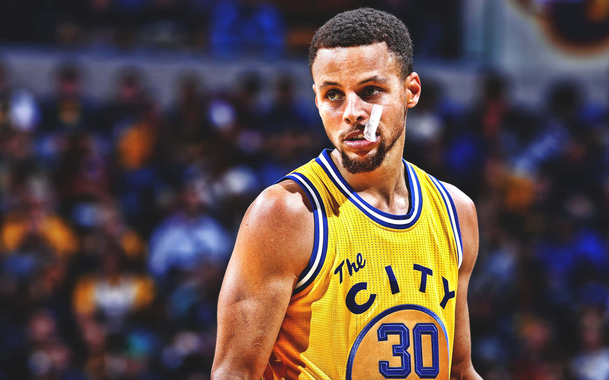

Feliz Dia Mujer Lui


- 
Carta Bonica!
Bueno Lui Feliz Dia De La Mujer, espero que este dia lo pases excelente, ps es el dia de tu raza jajajajj XDXDXD, en fin, te amo mucho gracias por todo lo que hemos pasado, estos 3 años y medio por decirlo asi, todo lo que hemos vivido, todo lo que somos, todos lo que fuimos y todo lo que seremos
Gracias por permitirme estar a tu lado, por ayudarme a superarme, por compartir excelentes momentos contigo. por pedirme la famosa copia de 8vo de Biologia, por que despues de eso no me hiciste el quite por decirlo asi, seguiste hablandome, en pocas palabras por no utilizarme solo pa eso, por permitirme entrar a tu vida en forma de amigo, dedicarte a conocerme mas, irnos poco a poco conectarnos, me acuerdo cuando te pedi el BBM, (yo ni tenia eso,te lo pedi para poder hablarte y luego me toco crearme uno xD)
Y luego de crearme ese BBM te agregue y empezamos a charlar ahi a conocernos mas diria yo, y me acuerdo en algun momento que yo me quede sin internet, y pues como uno todo estupido cuando se queda sin internet, empeze a escribir bobadas y en una de esas bobadas coloque algo que sentia "te puedo decir amor?" y me acuerdo que cuando lo envie justo ahi llego el internet y dije mierda la cague ya no querra hablarme, e ironicamente esa no fue la respuesta, la respuesta fue "Si." y yo quede como que OMFG enserio no me lo podia creer
Luego ps empezamos y seguimos hablando y sentia que cada dia me enamoraba mas, y ps tu empezaste a sentir lo mismos, nos conectamos y fue una mutua sintonia y cada dia hablabamos mas y nos empezabamos a llevar bien y todo eso! y cada mia mas apegados, mas apegados, mas apegados, y se sentia super guau, y el dia del villancico de 8vo CHAN CHAN CHAN....... Ese dia nosotros corriendo en ese segundo piso x el baño arreglandonos, y al final pues... pues.... lo mas significativo... NUESTRO PRIMER BESO OMG eso nunca me lo espere, o sea yo dandome un beso contigo, what eso fue la gloria. eso me dejo impactado y lo haria por el resto de mi vida, pues mira nomas sigo empendejado jajajajaj..... en fin, y pues nos enamoramos diria yo...
Luego seguimos en colegio dandonos amor amor amor amor amor y mas amor, todo fue amor xD. luego nos volvimos novios, pero no te supe valorar y ps nos distanciamos luego llego el 9no y pues como que volvimos a retomar... pero mientras pasaba esto.. llego gallego y te volviste novia de el, eso me dolio y tambien ps cuando se dieron el beso enfrente mio yo quede como que AUCH y pues bueno... seguimos asi te veia sufrir por el y te trataba de ayudar (que buena gente soy) y pues luego terminaron y ps aproveche y nos juntamos
Y despues 6 meses de novios excelentes meses, pero ocurrio un problema con tu mom y nos hizo separar.... y nos distanciamos 9 meses...meses largo.... y nos volvimos a reencontrar (siempre que nos separamos nos reencontramos jajajaj xD) y volvimos y empezamso de nuevo, te amo mucho todo 10 a sido cosas buenas, muchos amores, muchas cosas bonitas por eso te amo, por hacerme ver mi vida de un nuevo color, por iluminarme, por guiarme por la oscuridad te amo, por estos 3 años estar a mi lado, quererme, protegerme, amarme y añorarme te amo mucho
Eres mi todo, siempre lo eres, siempre lo seras, tu eres la unica chica que amo, ame y amare con todo mi corazon, mi sentimiento hacia ti es unico y real, no te cambiaria por ninguna otra chica del mundo, eres y seras la Miss Universo de mi corazón por ti me la juego totalmente, no hay barrera que por tu amor no quisiera superar, espero que este regalo te guste y sea muy especial para ti. te amo mucho y sigamos disfrutando :P, que se vengan muchos años mas, juntos a tu lado.